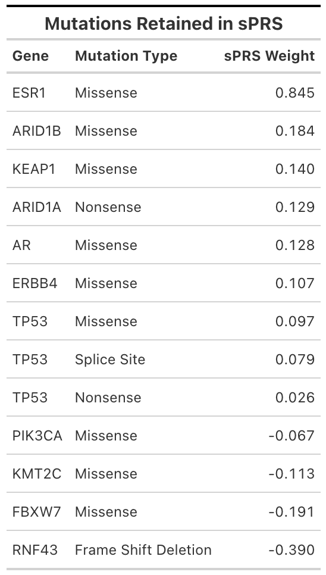
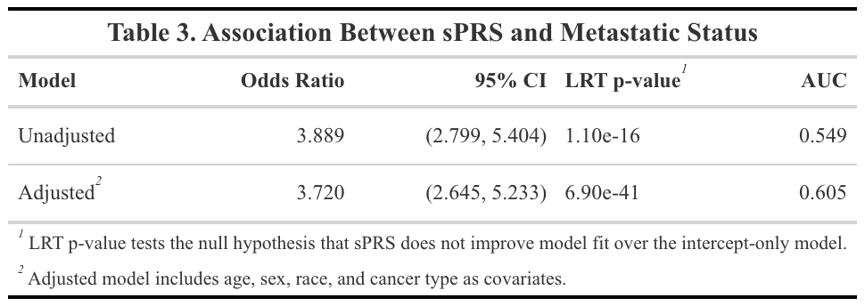
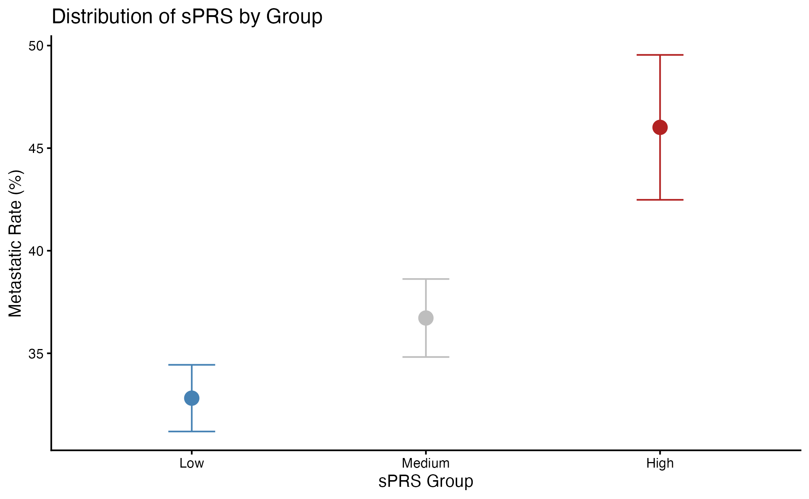

About
This study proposes a novel framework for a somatic polygenic risk score (sPRS), which aggregates weighted somatic tumor variants (gene x variant) to stratify metastasis risk. Weights were computed using MSK-CHORD 2024 data (n = 21,475) via L1-regularized logistic regression with selective penalization, keeping age, sex, race, and cancer type unpenalized.
Methods
Weights were computed using MSK-CHORD 2024 data (n = 21,475) via L1-regularized logistic regression with selective penalization, keeping age, sex, race, and cancer type unpenalized. Bootstrap stability analysis across 1,000 samples identified 13 gene x variants that consistently contributed to metastasis risk. Association with metastatisis was evaluated using a Likelihood Ratio Test on both adjusted and unadjusted logistic regression models. sPRS was also compared against TMB and MSI in terms of discriminative ability regarding metastasis. Finally, sPRS was grouped by tertile and tested for signficant differences.
Results
The 13 gene x variants are identified in the table, with their corresponding weights.

Metastatic status is associated with sPRS in both adjusted and unadjusted settings.

sPRS distribution by tertile group was significantly different with respect to metastatic rate.

Team
- Medha Rao · University of Michigan